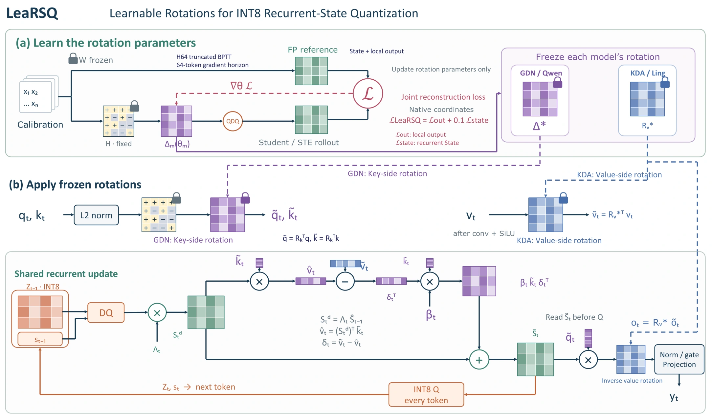

LeaRSQ：面向线性注意力循环状态量化的可学习旋转
LeaRSQ: Learnable Rotations for Recurrent-State Quantization in Linear Attention Models
针对 GDN、KDA 等线性注意力模型在解码中反复读取和更新循环状态的问题，研究 INT8 量化误差的累积与传播。LeaRSQ 在冻结预训练模型参数的条件下，联合优化状态与局部输出重建，分别在 GDN 的 Key 侧和 KDA 的 Value 侧学习适配模型的旋转。
研究问题、算法创新与贡献
研究问题
GDN、KDA 等线性注意力模型通过固定大小的循环状态保存历史信息，但高精度状态仍需在每步解码中反复读取和更新，带来显存与访存开销。直接使用 INT8 会使量化误差随循环更新传播，固定 Hadamard 旋转又难以适配不同模型和层的状态分布。因此，研究重点是如何学习更适合量化的状态表示，同时兼顾状态重建与输出保真。
算法创新
- 结构适配的可学习正交旋转：冻结预训练模型参数，仅学习旋转；分别在 GDN 的 Key 侧和 KDA 的 Value 侧调整量化坐标。
- 状态与局部输出联合重建：以高精度路径为参考，联合优化局部输出重建损失与循环状态重建损失，兼顾内部状态表示与当前输出的保真。
- 跨循环步骤的旋转学习：使用 H64 截断反向传播，让训练目标考虑连续 64 个词元中量化误差的累积影响。
贡献
形成从模型适配的表示学习到实际推理路径的循环状态量化方案，覆盖 Qwen3.5-9B／GDN 与 Ling-3.0-tiny／KDA 两类结构。将学习后的旋转冻结并接入 SGLang，融合状态反量化、循环更新与再量化，使循环状态在每步解码后以 INT8 写回。